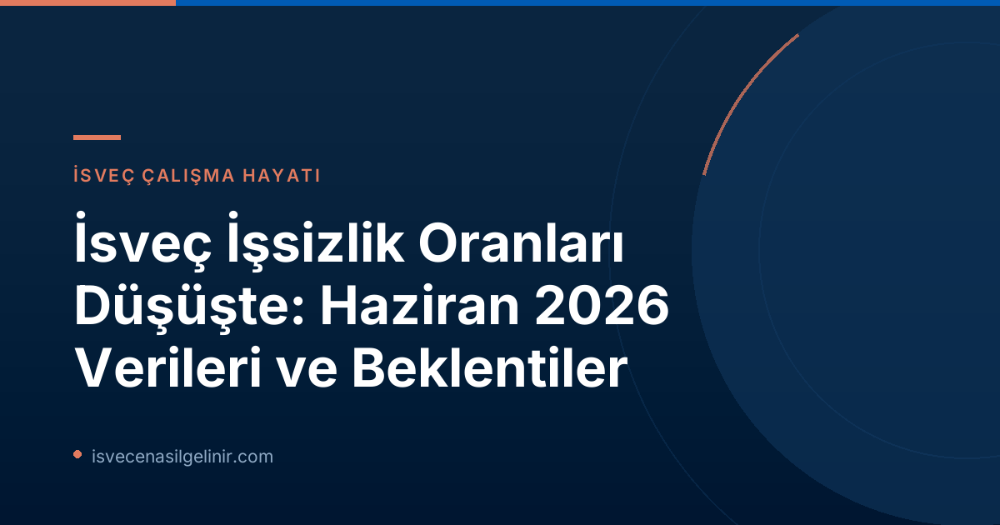

İsveç'te İşsizlik Oranları Düşüşünü Sürdürüyor: Haziran 2026 Verileri
Arbetsförmedlingen'in son raporuna göre, İsveç'te işsizlik oranlarındaki düşüş eğilimi Haziran 2026'da da devam etti. Ülke genelinde kaydedilen bu olumlu gelişme, hem iç piyasa dinamiklerinin güçlendiğini hem de önceki tahminlerin tutarlı olduğunu gösteriyor. Haziran 2026 itibarıyla 344.000 kişi işsiz olarak kayıtlara geçerken, bu rakam geçtiğimiz yılın aynı dönemine göre 22.000 kişilik önemli bir düşüşe işaret ediyor. İşsizlik oranı, kayıtlı işgücünün yüzdesi olarak bir yıl içinde %6,9'dan %6,4'e gerileyerek yarım puanlık bir iyileşme gösterdi.
Genel İşsizlik Rakamları ve Oranlar
Aşağıdaki tablo, Haziran 2026 ve Haziran 2025 arasındaki temel işsizlik göstergelerini karşılaştırmalı olarak sunmaktadır:
| Gösterge | Haziran 2026 | Haziran 2025 | Değişim |
|---|---|---|---|
| Kayıtlı İşsizlik Oranı | %6,4 | %6,9 | -%0,5 |
| Toplam Kayıtlı İşsiz Sayısı | 344.357 | 366.496 | -22.139 |
| Açık İşsiz Sayısı | 193.650 | 201.528 | -7.878 |
| Aktivite Destekli Programlardaki Kişi Sayısı | 150.707 | 164.968 | -14.261 |
Genç İşsizliği ve Uzun Süreli İşsizlikteki İyileşme
İsveç'in iş piyasası, genç işsizliği ve uzun süreli işsizlik gibi kritik alanlarda da iyileşme kaydetti.
- Genç İşsizliği (18-24 yaş): Haziran 2026'da 39.000'den fazla genç işsiz olarak kayıtlara geçti. Bu sayı, bir önceki yılın aynı ayına göre yaklaşık 3.000 kişilik bir düşüşü temsil ediyor. Genç işsizlik oranı %7,8'den %7,3'e geriledi.
- Uzun Süreli İşsizlik (En az bir yıl işsiz kalanlar): En az bir yıl süredir işsiz olanların sayısı 148.000 olarak kaydedildi. Bu grup da geçtiğimiz yıla göre 4.000 kişilik bir düşüş yaşadı (2025'te 152.000 kişi).
- Dış Ülke Doğumlu Uzun Süreli İşsizler: Avrupa dışındaki ülkelerde doğmuş ve en az on iki aydır işsiz olan yaklaşık 68.000 kişi bulunmaktadır. Bu grupta da önemli bir iyileşme gözlendi; geçtiğimiz yılın aynı ayına göre 6.000 kişilik bir azalma yaşandı. Özellikle bu grubun, yerli uzun süreli işsizlere göre daha olumlu bir gelişim sergilemesi dikkat çekicidir.
İsveç'te uzun vadeli bir yaşam kurmayı düşünen göçmenler için bu istatistikler umut verici olsa da, iş piyasasına entegrasyon ve İsveç Vatandaşlık Testi gibi süreçlere iyi hazırlanmak büyük önem taşımaktadır.
Bölgelere Göre İsveç İşsizlik Haritası
Haziran 2026 itibarıyla İsveç'in farklı bölgelerinde işsizlik oranları önemli farklılıklar gösterdi:
En Yüksek İşsizlik Oranına Sahip Bölgeler
- Skåne: %8,4
- Södermanlands: %8,0
- Västmanland: %7,8
En Düşük İşsizlik Oranına Sahip Bölge
- Norrbotten: %3,4
Bu bölgesel farklılıklar, İsveç'e göç etmeyi düşünenler için iş arayışlarında stratejik bir rol oynayabilir.
İş Piyasası Dinamikleri: Yeni Kayıtlar ve İstihdama Geçişler
İş piyasasındaki genel toparlanmayı gösteren diğer önemli veriler şunlardır:
- Yeni İş Başvuruları: Haziran ayında Arbetsförmedlingen'e yeni iş başvurusu yapanların sayısı 43.000'in üzerindeydi. Bu rakam, geçtiğimiz yılın aynı dönemine göre 1.000 kişilik bir düşüşü ifade ediyor. İş arayan sayısındaki bu azalma, iş piyasasındaki genel talebin arttığına dair bir gösterge olabilir.
- İstihdama Geçişler: Arbetsförmedlingen'den kaydı silinen ve iş bulan kişi sayısı 36.000 olarak kaydedildi. Bu, Haziran 2025'e göre 3.000 kişi daha fazla kişinin istihdama katıldığı anlamına geliyor ve işe yerleştirme süreçlerinin etkinliğini vurguluyor.
- İşten Çıkarma İhbarları: İşten çıkarma ihbarları da önemli ölçüde azaldı. Haziran 2026'da 2.857 kişi işten çıkarma ihbarı alırken, bu sayı Haziran 2025'teki 4.606'dan belirgin şekilde düşük.
Arbetsförmedlingen İstatistiklerinin Kapsamı ve Farkı
Arbetsförmedlingen'in yayınladığı bu veriler, kurumun kendi kayıtlarına dayalı faaliyet istatistikleridir ve İsveç'in resmi istatistikleri niteliğinde değildir. İsveç'in resmi işsizlik istatistikleri, Statistiska centralbyrån (SCB) tarafından yapılan "İşgücü Araştırması (AKU)" ile açıklanmaktadır.
Arbetsförmedlingen İstatistiklerinin Özellikleri
- Veri Kaynağı: Arbetsförmedlingen'in kayıtları (kayıtlı işsizler, yeni açık iş ilanları vb.).
- Tanım: "Kayıtlı işsiz" terimi, "açık işsizler" (işsiz, aktif olarak iş arayan ve hemen işe başlayabilecek durumda olanlar) ve "aktivite destekli programlarda bulunanlar" olmak üzere iki grubu kapsar.
- Yaş Aralığı: 2026 istatistikleri 16-66 yaş aralığını kapsarken, 2025 istatistikleri 16-65 yaş aralığını kapsamaktadır.
- Metodoloji Değişimi: İşgücü büyüklüğünün hesaplanması ve dolayısıyla göreceli işsizlik düzeyinin hesaplanması metodolojisi 2024 yılında değiştirilmiştir.
Bu ayrım, istatistikleri yorumlarken ve farklı kaynaklardan elde edilen verileri karşılaştırırken önemlidir.
İsveç'e Göçmenler İçin İş Piyasası Fırsatları: Vatandaşlık Yolunda İlk Adımlar
İsveç'in iş piyasasındaki bu olumlu gelişmeler, ülkeye göç etmeyi düşünen veya halihazırda İsveç'te yaşayan yabancı kökenli kişiler için önemli kapılar aralamaktadır. Nitelikli işgücüne olan talep ve uzun süreli işsizlik oranlarındaki düşüş, entegrasyon süreçlerini hızlandırabilir.
İsveç'te uzun vadeli bir gelecek planlayanlar için ise vatandaşlık süreci önemli bir kilometre taşıdır. Bu süreç, İsveç dilini öğrenmeyi ve toplum adaptasyonunu içerdiği gibi, sverigemedborgarskapsprov.com adresinde detaylarını bulabileceğiniz İsveç Vatandaşlık Testi'ne hazırlanmayı da gerektirir. İş bulmak, vatandaşlık sürecinde önemli bir adımdır ve entegrasyonunuzu kolaylaştıracaktır.
Referanslar:
İsveç'teki Geleceğinizi Şekillendirin!
İsveç'in dinamik iş piyasası hakkında daha fazla bilgi almak, iş bulma stratejilerinizi geliştirmek ve İsveç vatandaşlık sürecine dair güncel rehberlere ulaşmak için sitemizi keşfedin.